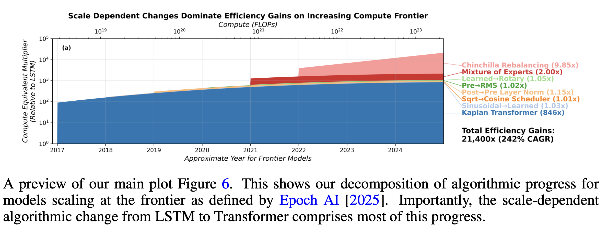
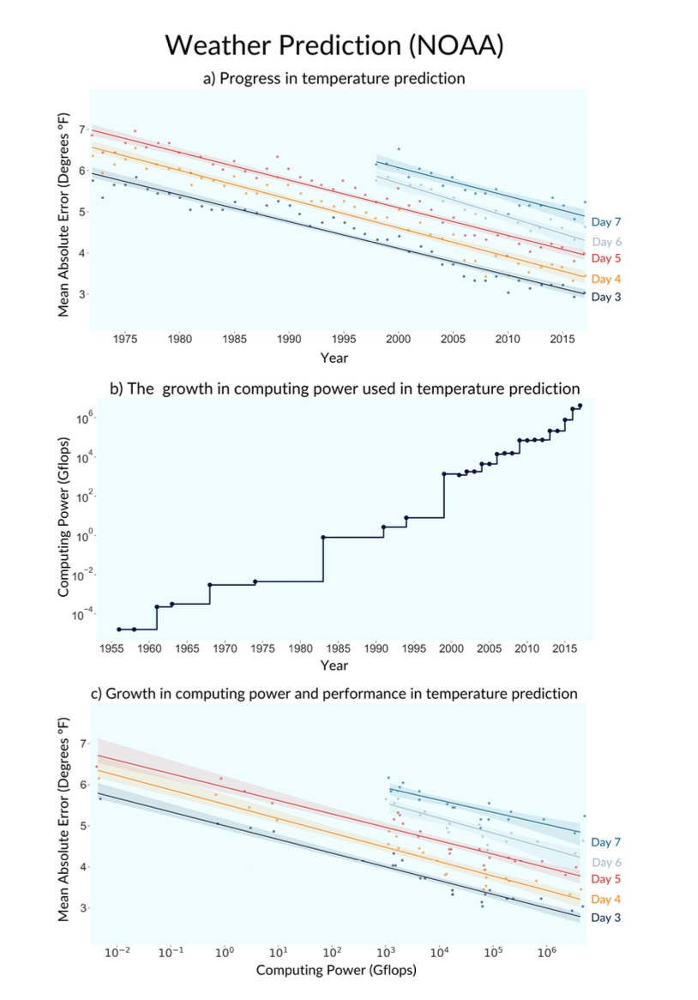

Summary
- Capabilities are growing rapidly, but they’re hard to quantify.
- There’s no consensus for a scale in AI capabilities. We do see fairly steady growth across many metrics: time horizon, average benchmark scores (ECI), effective compute, and predictive loss.
- Algorithmic progress seems to be around 4X/year.
-
We can quantify algorithmic progress with compute efficiency, i.e. the reduction in cost required to reach a given capability score.
AI researchers have been making a very consistent series of discoveries, typically estimated at increasing compute efficiency by around 4X/year (with many qualifications, discussed below).
The 4X/year increase in algorithmic efficiency seems to be coming from a roughly 2X/year increase in researchers.
- AI speedups will cause a loop, but unclear how strong.
-
Historically algorithmic progress has been a function of human R&D, but we now expect the AI to itself increase the rate of algorithmic progress, through increaseing effective R&D: \[ \xymatrix@C=1.4em@R=1.4em{ & *++[F]{R\&D_t}\ar[d] & *++[F]{R\&D_{t+1}}\ar[d] & *++[F]{R\&D_{t+2}}\ar[d] & \\ \ar[r] & *++[F]{Algorithms_t}\ar[r] & *++[F]{Algorithms_{t+1}}\ar[r]\ar[ur]|{??} & *++[F]{Algorithms_{t+2}}\ar[r]\ar[ur] & } \]
There is still no consensus on the key diminishing-returns parameter \(\beta\). The cleanest direct AI-domain estimates I found are Ho & Whitfill’s computer-vision, RL, and NLP posteriors, which are around \(\beta \approx 1.3\)-\(1.6\) but very noisy. By contrast, several software-intelligence-explosion calibrations imply much lower values like \(\beta \approx 0.15\)-\(0.25\), while Davidson et al. summarize the software evidence as roughly \(\beta_S \approx 1\) Ho and Whitfill (2025); Davidson (2021); Davidson et al. (2026).
A lot of the nearby literature is actually written in terms of returns parameters like \(r=\lambda/\beta\) or \(r=\lambda \alpha / \beta\) rather than \(\beta\) itself. That matters because \(r\) is informative about long-run dynamics, but it does not separately identify \(\beta\) unless the authors also pin down \(\lambda\) and sometimes \(\alpha\) Erdil, Besiroglu, and Ho (2024); Davidson and Houlden (2025).
- AI systems are now contributing to algorithmic progress.
-
Until recently most AI R&D was done without help by LLMs, but we now see evidence for two channels:
- Augmenting AI researchers: AI researchers self-report big efficiency gains, e.g. Anthropic (2025) self-report approximately 50% productivity gains.
- Automating AI research: E.g. AlphaEvolve, TTT-Discover, autoresearch.
Both of these effects are hard to measure, & we have a great deal of uncertainty.
Summary (OLD)
Baseline model:
- Frontier model capability is growing at 9X/year (measured in effective compute)
- Frontier training compute is growing at 3X/year
- Algorithmic efficiency is growing at 3X/year
- R&D staff is growing at 2X/year.
Two ways we can get RSI: (1) augmentation of AI R&D; (2) automation of AI R&D.
AI augmentation of R&D:
- Suppose higher levels of model capability \(A\) increases the effective R&D labor, \(R\), by some amount, \(R=\bar{R}A^\theta\).
- We want to measure how \(A\) affects \(R\), e.g. by running an uplift study with different levels of \(A\).
- We could then plug this into a standard R&D model to estimate the net degree of acceleration, with \(\dot{A}=R^\gamma A^{1-\beta}\).
- However it’s really hard to estimate the relationship between model capability and R&D worker speedup. People are poor at introspecting uplift, and it’s difficult to run experiments.
- Notes:
- The augmentation could take place through automation of subtasks, where the subtasks are complements. E.g. if they’re perfect complements then the acceleration will be \(\frac{1}{1-f}\), where \(f\) is the share of tasks you’ve automated.
- Any \(\theta>0\) will make growth super-exponential, AKA hyperbolic, but the magnitude matters.
- If \(\theta\) is sufficiently high (\(\theta>\gamma-\beta\)) then there will be self-sustaining growth, i.e. growth even if R&D labor was constant.
- We ignore expenditure on inference, assume that it asymptotes relatively quickly (seems reasonable).
AI automation of R&D:
- Maintained assumption: there’s a single type of labor, though people can vary in ability, e.g. one person is a 10X R&D worker.
- Suppose instead that model capability \(A\) can autonomously do AI R&D work, i.e. it’s a perfect substitute for all human labor.
- Now we’ll immediately be bottlenecked on inference cost: (1) we’ll get a rapid adjustment of wages & inference cost until they’re equilibrated (will drive out all but the best AI researchers); (2) the price of effective R&D labor will decline at the rate of inference cost decline.
AI partial automation (apple picking).
- We can instead .
Complications:
- Measuring capability.
- Bottlenecks. Some arguments that AI R&D is bottlenecked by compute, e.g. see Whitfill and Wu (2025).
- Scale-dependent algorithmic progress. Gundlach et al. (2025) argue that algorithmic progress has contributed much less.
- Data contribution. Berren Millidge argues “Most Algorithmic Progress is Data Progress”
I think this picture gives a reasonable summary of the orthodox picture of LLM progress:
- Technology is getting 3X more efficient each year (blue curves shifting left)
- Frontier training compute is increasing at 3X/year (black points shifting right)
Some notes:
- These growth-rate numbers are very ballpark, lots of disagreement.
- The technology curve includes anything that changes the mapping of training expenditure to intelligence: declines in GPU cost, advances in algorithms, accumulation of training data, and progress in elicitation.
- There’s no consensus on how to measure the y-axis (“model intelligence”). For many questions it actually doesn’t matter as long as we have an ordinal measure (i.e. we can reliably rank model intelligence). However for RSI it matters.
- Labs are probably spending relatively more on R&D than on any single frontier training run. E.g. Epoch estimates that OpenAI spent much more on experiments and broader R&D compute than on the final training runs of released models.
- Gundlach et al. (2025) argue that the true technology curves are steeper, and shifting left much more slowly. Thus algorithmic progress is relatively less important, and most progress is coming from pure scale.
| annual growth (log) | worker exp. | experiment exp. | scale-free? | |
|---|---|---|---|---|
| GPU design | 0.3 | - | - | ✅ |
| Model architecture | 0.3 | $0.5B | $2B | ❌ |
| Pretraining optimizer | 0.3 | $0.5B | $2B | ❌ |
| Pretraining data | 0.3 | $0.5B | $0.5B | ❌ |
| Posttraining algorithm (RL) | 0.3 | $0.5B | $0.5B | ❌ |
| Posttraining data | 0.3 | $0.5B | $0.5B | ✅ |
| Elicitation/harness | 0.3 | $0.5B | $0.1B | ✅ |
| TOTAL | 2.1 (8X) | $3B | $6B |
- Q: what determines the share spent on salary-vs-experiments?
-
- Not just determined by the cost of experimenation. Even if experiments were cheap, you might want to spend a lot on them, because you’re bottlenecked on .
- Random landscape → more experiments. If each alternative is a completely random draw, then there’s no returns to thinking harder.
- Regular landscape → more experiments. Some landscapes are known to be regular, so you can just set a well-known optimization algorithm against them, and spend all your budget on collecting more datapoints, rather than tuning the algorithm. E.g. hyperparameter tuning.
- Structured landscape → more thinking. If the landscape has some latent structure, that requires deep reflection, then we’d expect relatively higher payoff to thinking.
- Q: where is AI likely to help?
-
- At each layer we have production functions Y(W,E).
Data on Compute Growth
- Best estimates.
-
- Training compute expenditure has been growing around 3X/year, but will gradually fall to 1.1X/year over 2026-2030.
- Training compute (FLOP) has been growing around 4X/year, but will fall to around 1.5X/year.
- Algorithmic efficiency has been growing around 3X/year, it is hard to forecast future trends.
| source | scope | growth | years | quantity |
|---|---|---|---|---|
| Amodei and Hernandez (2018) | largest AI training runs | 10X | 2012-2018 | training compute (FLOP) |
| Epoch AI (2025a) | notable models | 4.1X | 2010-May 2024 | training compute (FLOP) |
| Epoch AI (2025a) | frontier models | 5.3X | 2010-May 2024 | training compute (FLOP) |
| Epoch AI (2025a) | recent frontier models | 4.2X | ~2018-May 2024 | training compute (FLOP) |
| Epoch AI (2025a) | frontier language models | 5.0X | mid-2020-May 2024 | training compute (FLOP) |
| Epoch AI (2025a) | notable language models | 9.5X | Jun 2017-May 2024 | training compute (FLOP) |
| Epoch AI (2026a) | notable models | 4.4-4.7X | 2010-2026 | training compute (FLOP) |
| Epoch AI (2025b) | notable models graph | ~4.6X | 2020-Jul 2025 | training compute (FLOP) |
| Epoch AI (2026b) | frontier language models | 5X | 2020- | training compute (FLOP) |
| Epoch AI (2026b) | installed NVIDIA compute stock | 2.3X | 2019- | compute stock (FLOP/s) |
| Efrati and Muppidi (2025) | OpenAI training compute spend | 2.3X->1.1X | 2025-2030 | training compute ($) |
| Epoch AI (2026b) | frontier language model training cost | 3.5X | 2020- | training compute ($) |
| Edelman and Ho (2025) | OpenAI compute spend / compute stock | 2.2X | 2024-2025 | compute spend / stock ($) |
| Efrati and Muppidi (2025) | OpenAI compute spend | 2.3X->1.1X | 2025-2030 | total compute (training+inference) ($) |
- Amodei and Hernandez (2018) “AI and compute”
-
“since 2012, the amount of compute used in the largest AI training runs has been increasing exponentially with a 3.4-month doubling time”
“The trend represents an increase by roughly a factor of 10 each year.”
- Epoch AI (2026b) “Trends in Artificial Intelligence”
-
As of March 2026, but they say “These trends appear set to continue through 2030.”
- Compute stock growth: 2.3X/year (2.2X-2.5X), “the total computing power of the stock of NVIDIA chips”
- Training compute: 5X/year (4X-6X)
- FLOP/s per dollar: 1.37X/year (1.30X-1.45X)
- Algorithmic progress: 3X/year (2.8X-4.4X) (“pre-training compute efficiency”)
- Training cost: 3.5X/year (2.8X-4.4X)
- LLM inference prices: 40X/year (10X-900X) “the cost to inference an LLM at a fixed level of performance has fallen rapidly, but unevenly across tasks”
- Edelman and Ho (2025) “Compute scaling will slow down due to increasing lead times”
-
“OpenAI currently likely has over $15 billion worth of compute, and this compute stock has been growing by around 2.2× each year. At that pace, current trends would predict a trillion dollar cluster around 2030 — but longer lead times would delay this to around 2035.”
“OpenAI’s compute spend in mid-2024 was around $6 billion, compared to roughly $13 billion mid-2025. This leads to a factor increase of around 2.2×
- Efrati and Muppidi (2025) “OpenAI’s $350 Billion Computing Cost Problem”
-
They have leaked data on OpenAI compute expenditure forecasts, as of late 2025:
Year R&D Compute Inference Compute R&D% Revenue 2025 ~$8B ~$6B 57% ~$12B 2026 ~$18B (+125%) ~$14B (+133%) 56% ~$30B (+150%) 2027 ~$32B (+78%) ~$20B (+43%) 62% ~$60B (+100%) 2028 ~$40B (+25%) ~$28B (+40%) 59% ~$100B (+67%) 2029 ~$45B (+13%) ~$35B (+25%) 56% ~$145B (+45%) 2030 ~$50B (+11%) ~$50B (+43%) 50% ~$200B (+38%) - Epoch AI (2025a) “Training compute of frontier AI models grows by 4-5x per year”
-
“compute growth in recent years is currently best described as increasing by a factor of 4-5x/year.”
More granular estimates from the same post:
- notable models: 4.1x/year (90% CI: 3.7x to 4.6x) between 2010 and May 2024
- frontier models: 5.3x/year (90% CI: 4.9x to 5.7x) between 2010 and May 2024
- recent frontier models: 4.2x/year (90% CI: 3.6x to 4.9x) after ~2018
- frontier language models: 5.0x/year (90% CI: 3.1x to 7.3x) after mid-2020
- notable language models overall: 9.5x/year (90% CI: 7.4x to 12.2x) between June 2017 and May 2024
“recent frontier growth since 2018 is better described as a 4x/year trend.”
“notable language models overall … have grown as fast as 9x/year between June 2017 and May 2024.”
- Epoch AI (2026a) “The training compute of notable AI models has been doubling roughly every six months”
-
“Since 2010, the training compute used to create AI models has been growing at a rate of 4.4x per year.”
Historical: 2010 onward. The same page’s regression table gives
4.7x / year (4.3x to 5.2x), so the safest summary is probably “roughly 4.5x/year.” - Whitfill, Snodin, and Becker (2025) “Forecasting AI Time Horizon Under Compute Slowdowns”
-
They use OpenAI’s own compute-spend forecasts up to 2030, as reported in journalism.
The annualized growth rates I wrote above (
~2.5X/yearfor 2026-2028,~1.5X/yearfor 2028-2030) are only rough chart reads from the figure, not direct textual claims in the paper. - Epoch AI (2025b) “Data on AI Models”
-
“Our comprehensive database of over 3200 models tracks key factors driving machine learning progress.”
The interactive graph currently shows about 4.6x/year growth in FLOPs of notable models, over 2020 - July 2025 (the latest datapoint).
- You (2025) “Most of OpenAI’s 2024 compute went to experiments”
-
- $5B total research compute
- $2B inference compute
- only a minority of R&D compute appears to have gone to the final training runs of released models
- GPT-4.5 final training run was only a modest share of the total R&D bucket
Data on Algorithmic Progress
- Best estimates.
-
- Around 4X/year, including the entire stack (GPU, pretraining, posttraining, elicitation).
| source | scope | progress | years | quantity |
|---|---|---|---|---|
| Epoch AI (2026b) | AI hardware price-performance | 1.37X | 2012-2025 | FLOP/s per dollar |
| Ho et al. (2024) | pre-training compute efficiency | 3X | 2012-2023 | compute to reach a fixed performance threshold |
| Whitfill, Snodin, and Becker (2025) | broad software progress implied by the time-horizon model | 3.5X | 2019-2025 | effective software progress |
| Ho (2026) | broad all-in software progress | 10X (2X-50X) | recent LLM era | inclusive of training + post-training |
| Byrnes (2026) | narrow core learning algorithm improvements | 1.3X | 2018-2026 | excludes data/setup-specific gains |
| Gundlach et al. (2025) | small-scale algorithmic progress | 1.5X | 2012-2023 | FLOPs required to achieve benchmark scores at small scale |
| Gundlach et al. (2025) | frontier-scale algorithmic progress | 2.5X | 2012-2023 | FLOPs required to achieve benchmark scores at large scale |
| Epoch AI (2026b) | pre-training compute efficiency | 3X | 2026- | forward-looking pre-training compute efficiency |
| Whitfill (2026) | GPT-2 replication case study: fewer FLOPs | 1.72X | 2019-2026 | FLOP efficiency in training GPT-2 |
| Whitfill (2026) | GPT-2 replication case study: fewer GPUs | 2.5X | 2019-2026 | GPU required to train GPT-2 |
- Ho et al. (2024) “Algorithmic progress in language models”: 3X/year
-
“the compute required to reach a set performance threshold has halved approximately every 8 months, with a 95% confidence interval of around 5 to 14 months”, i.e. about 2.8X/year.
- Ho (2026) “The least understood driver of AI progress”: 10X/year.
-
“So here’s my best guess: after accounting for all training compute (including post-training), I think we’re seeing software progress at around 10x per year, and my 80% credible interval would probably range from 2x to 50x per year.”
- Byrnes (2026) “The nature of LLM algorithmic progress (v2)”: 1.3X/year.
-
“apart from [transformers] the field has produced probably <10x of training efficiency improvements in this category in the entire period from 2018 to today (approx. 30%/year).”
He says he is deliberately restricting attention to core “learning algorithm” improvements, excluding data-related improvements and setup-specific optimizations.
- Whitfill (2026) “Post on GPT-2 to nanoGPT efficiency gains”: 2.5X/year
-
He estimates GPT-2 efficiency improvement was 700X over 2019-2026. Important to note that this is all at relatively small scale, so I think it is best treated as a case study rather than an estimate for frontier models.
- Current nanogpt SOTA is 707x faster (2.5X/year)
- 15x faster FLOP per second (on fixed hardware) (1.5X/year)
- 46x less FLOPs to reach the same val loss (1.7X/year)
Also notable from nanoGPT (Jordan and contributors (2026)):
- Wall clock time: 30X lower (May 2024 was 45 minutes; Feb 2026 was 1.5 minutes; 5 doublings over 21 months so doubling every 4 months).
- Cost: 2500X lower (Karpathy says his 2024 nanoGPT costs ~$20 to train the model to get GPT-2 Karpathy (2024), a 2019 blog post estimated GPT-2 training cost was $50K).
- Gundlach et al. (2025) “On the Origins of Algorithmic Progress in AI”: 1.5X/year.
-
“Our results indicate that algorithmic progress for small models has been far slower than previously assumed, and that measures of algorithmic efficiency are strongly reference-dependent.”
“We find two strongly scale-dependent algorithmic innovations: LSTMs to Transformers, and Kaplan to Chinchilla re-balancing. Together, these account for 91% of total efficiency gains when extrapolating to the 2025 compute frontier.”

Figure Estimates over 2012-2023:
- 21,000X total (2.5X/year)
- 100X at small scale (1.5X/year), i.e. if we hadn’t scaled compute we’d only be increasing at 1.5X/year.
- Thompson, Ge, and Manso (2022) “The Importance of (Exponentially More) Computing Power”
-
“we assemble direct quantitative evidence of the impact that computing power has had on five domains: two computing bellwethers (Chess and Go), and three economically important applications (weather prediction, protein folding, and oil exploration). Computing power explains 49%-94% of the performance improvements in these domains.”
[Not a direct estimate for LLM training efficiency, but useful outside-view background for the broader compute-versus-algorithms debate.]

Literature Review on RSI Models
We want to answer these questions:
- Based on history of AI R&D, what’s a reasonable estimate of how AI R&D will change the future trajectory?
- What is the best capability metric for estimating AI R&D contribution?
Basic argument:
- Say algorithmic efficiency has been growing at 5X/year, so we can get the same intelligence for 5X lower cost.
- We are starting to see glimmers of AI contributing to R&D, & want to predict how this will change the system.
- Some alternatives in how to model this:
Accelerant. Suppose a certain level of AI can speed up a human researcher by a certain proportion, \(\lambda\). This feedback loop should accelerate AI development, but it’s sensitive to how strong this connection is.
Perfect substitutes. Suppose AI can do entirely autonomous research, i.e. it’s a perfect substitute for a human. Then we are only constrained on the cost of AI compute. Unless the cost is very high, this implies a massive acceleration in AI progress, constrained only by (a) experiment bottlenecks; (b) a ceiling to AI progress.
Imperfect substitutes.
- Endogenous growth setup: (1) diminishing returns to R&D about 1/2; (2) increasing returns to knowledge about 1/2; these balance and get balanced growth.
- Now we add link back from algorithms to R&D, but very little guidance on how to calibrate it.
Capability metrics:
- Human researcher uplift.
- Ability to push forward the frontier.
Wrinkles:
- Estimating algorithmic progress.
- Scale-dependent algorithmic progress.
- Bottlenecks on experiment compute.
- Shape of the landscape.
- Adding capital.
Ajeya’s questions:
- When will we have automated AI R&D?
- Answer: we already have automated R&D.
- When we have automated AI R&D, will this trigger super-exponential growth?
Core model:
\[\begin{aligned} \utt{\dot{A}}{algorithmic}{progress} &=\utt{R^{\gamma}}{new}{research} {\utt{A^{1-\beta}}{algorithms}{}} && \text{(progress)}\\ R&=A^{\kappa} && \text{}\\ \dot{A}&=A^{1-\beta+\kappa}\\ \end{aligned} \]
| Model | Summary | \(r\) used / reported |
|---|---|---|
| Charles I. Jones (1995) “R&D-Based Models of Economic Growth.” | Standard endogenous growth model: (1) diminishing returns to R&D; (2) positive spillovers from knowledge. | Defines the \(r=\lambda/\beta\) object, but no numeric calibration here. |
| Aghion, Jones, and Jones (2019) “Artificial Intelligence and Economic Growth” | They first model automation of goods tasks, then extend the same task-based setup to research tasks; in the strong-form limit, AI replaces people in idea production. | No standalone \(r\) calibration; emphasis is on task shares and \(\phi\). |
| Davidson (2021) “Could Advanced AI Drive Explosive Economic Growth” | The simplest model is where an AI robot perfectly substitutes for a worker, & then model the quantity increase of AI workers. | No single \(r\); imports low-\(\beta\) software/hardware benchmarks via \(\phi\). |
| Erdil et al. (2025) “GATE: An Integrated Assessment Model for AI Automation” | They model both which tasks AI can do, and the quantity of digital workers. | No single Jones-style \(r\) in this summary. |
| Davidson et al. (2026) “When Does Automating AI Research Produce Explosive Growth?” | Partial automation of research tasks in a networked multi-sector R&D system; goods-task automation is also present in the calibrated economy. They include cross-sector spillovers. | Software \(r_S \sim 1\), hardware \(r_H=5\), aggregate innovation \(r_A=0.32\). |
| B. F. Jones (2025) “Artificial Intelligence in Research and Development” | AI progress causes both (1) a larger share of tasks to be automated; (2) cost to drop for already-automated tasks. Task bottlenecks determine the net impact. | No single numeric \(r\) in this summary. |
| Kokotajlo et al. (2025) “AI Futures Model: Dec 2025 Update” | Stagewise automation of AI R&D: coding first, then research taste / direction-setting; eventual full automation at SAR. | No explicit Jones-style \(r\) calibration. |
| Eth and Davidson (2025) | Focuses directly on whether current software R&D has \(r>1\), rather than estimating \(\beta\) separately. | Argues current software research may have \(r>1\). |
| Kwa (2026) “Research Note: A Simpler AI Timelines Model Predicts 99% AI r&d Automation in ~2032” | A simplification of Kokotajlo et al. (2025), AI automates a fraction of tasks asymptotically approaching 1, assume no substitutability between tasks. | No explicit \(r\); assumes \(\beta \in [0.3,1]\). |
| Mechanism | Examples | Comment |
|---|---|---|
| AI replaces R&D workers | Davidson (2021); late-stage AI Futures; strong-form Aghion et al. | AI is effectively a researcher/worker replacement, not just a helper on some tasks. |
| AI automates a subset of general tasks | Aghion et al. (goods side); GATE; parts of Davidson et al. | This is the macro/task-automation framing: AI gradually expands over the economy-wide task space. |
| AI automates a subset of R&D tasks | Aghion et al. (ideas side); Davidson et al.; Ben Jones; AI Futures; Kwa | This is the most common recent takeoff / AI-growth mechanism. |
| AI increases productivity of R&D workers | Ben Jones (fixed-task productivity gains); Besiroglu, Emery-Xu & Thompson (2024); early-stage AI Futures coding automation | This is the complementarity / uplift box, where AI raises progress per dollar or per researcher without immediately replacing everybody. |
| AI replaces low-quality R&D workers first | No clean formal model among these; closest is AI Futures’ top-vs-median milestone language | I would leave this as “not really modeled yet” rather than force one of these papers into the box. AI Futures comes closest rhetorically, but it is not a true heterogeneous-worker replacement model. ([AI Futures][4]) |
| Other mechanisms | AI improves research taste (AI Futures); increases digital-worker supply per automated task (GATE); raises cross-sector spillovers (Davidson et al.); raises R&D capital intensity (Besiroglu et al.) | These are important because they are not just “more tasks automated”; they change the mapping from capability to research output. ([AI Futures][4]) |
Charles I. Jones (1995) “R&D-Based Models of Economic Growth”
I’ll use the notation from Charles I. Jones (2022): \[\begin{aligned} Y_t &= A_t^\sigma L_{yt} && \text{(final good)} \\ \frac{\dot{A_t}}{A_t} &= R_t^\lambda A_t^{-\beta} && \text{(ideas)} \\ R_t+L_{yt} &= L_t && \text{(resource constraint)} \\ L_t &= L_0 e^{nt} && \text{(population growth)} \\ R_t &= \bar{s}L_t && \text{(allocation)} \end{aligned} \]
He also says he’ll sometimes write \(\dot{A}_t=R^\gamma_t A_t^\psi\).
“The parameter \(\lambda\) allows for thepossibility of duplicatione ffects,so that doubling the number of researchers at a point in time may potentially less than double the innovation rate; however, any λ>0, including λ=1, is allowed.”
“The parameter β > 0 captures the rate at which ideas—that is,proportional improvements in productivity—are getting harder to find.
On balanced growth path: \[g_y = \sigma g_A = \frac{\lambda\sigma}{\beta}n=\gamma n\]
On knife edge assumptions: he says the root of all exponential growth is exponential population growth (but seems a bit fishy).
Estimates of parameters:
- p136: \(\gamma = 1/3\), so output growth is 1/3 growth in ideas. He also predicts that long-run growth is much lower.
Description of Aghion, Jones, and Jones (2019). Adjust the ideas production function:
\[\dot{A}_t=A_t^{1-\beta}R_t^{1-\alpha}K_t^{\alpha}\]
with constant capital-output ratio you get: \[\dot{A}_t=\kappa A_t^{1-(\beta-\alpha)}L_t\]
“if the fraction of tasks that are automated (α) rises to reach the rate at which ideas are getting harder to find (β), we get a singularity! In particular, once α ≥ β, the model exhibits sufficiently strong increasing returns that there is no balanced growth path. Instead, the growth rate rises rapidly over time and the economy reaches infinite knowledge and income in finite time,assuming that is possible.”
Aghion, Jones, and Jones (2019)
Setup:
\[\begin{aligned} Y_t &= A_t^{\sigma} K_t^{\alpha} L^{1-\alpha} \\ \dot A_t &= K_t^{\beta} S^{\lambda} A_t^{\phi} \end{aligned} \]
Implications / thresholds:
- In this notation, \(\alpha\) is the capital exponent in goods production and \(\beta\) is the capital exponent in idea production; the “ideas getting harder to find” term is \(\phi < 1\), not Jones’s \(\beta\).
- In the paper’s task-automation framing, more automation raises the role of capital in both sectors, which can raise the long-run growth rate by making research effort more accumulable.
- The paper distinguishes Type I growth explosions, where growth rates rise without bound but remain finite at each date, from Type II explosions, where output becomes infinite in finite time.
- Type I condition in their examples: full automation of goods production. Once all goods tasks are automated, the goods sector becomes an AK-style economy, \(Y_t = A_tK_t\), and with ongoing technological progress the growth rate \(g_Y = g + sA_t\) rises without bound.
- Type II condition in their Example 2: full automation of ideas production. In their one-dimensional analogue this becomes \(\dot{A}_t = A_t^{1+\phi}\), so explosive growth requires \(\phi>0\).
- Type II can also arise without full automation in their Cobb-Douglas Example 3, where a key “constant returns to accumulable factors” parameter exceeds one.
| \(\alpha\) | capital exponent in goods production. |
| \(\beta\) | capital exponent in idea production. |
| \(\lambda\) | elasticity of idea production with respect to research labor. |
| \(\phi\) | standing-on-shoulders term in the paper’s notation, with Jones-style harder-to-find parameter \(\beta_{\text{Jones}} = 1-\phi\). |
| \(\sigma\) | role of nonrival ideas in final output. |
Davidson (2021)
Davidson writes idea production in \(\phi\)-notation rather than Jones \(\beta\)-notation, so the mapping is \(\beta = 1-\phi\).
- Aggregate innovation: \(\phi=-2.1 \Rightarrow \beta \approx 3.1\).
- Hardware: \(\phi=0.8 \Rightarrow \beta \approx 0.2\).
- ML software: \(\phi=0.85 \Rightarrow \beta \approx 0.15\).
This is one of the main routes by which very low software \(\beta\) enters AI-takeoff discussions. But it is best read as importing earlier subsector estimates in \(\phi\)-notation, not as a fresh direct estimate of frontier-AI-lab \(\beta\).
Erdil and Besiroglu (2024) “Explosive growth from AI automation: A review of the arguments”
“Bloom et al. 2020, which provides us perhaps with the best estimates of the extent to which ideas get “harder to find”, estimates that λ/ϕ ≈ 0.32 for total factor productivity in the US economy. Based on this, we find that hyperbolic growth occurs with values of β as low as 1 − 0.32 = 0.68. Hence, hyperbolic growth with AI is predicted by R&D-based growth models even if we do not strictly accept the conclusion of the replication argument that β = 1. This point, that avoiding increasing returns to scale is difficult to avoid even when ideas get “harder to find” over time, has been noted elsewhere, notably by Davidson 2021. Indeed, this outcome is consistent with fairly conservative assumption on there being decreasing returns on inputs to final goods production.”
Erdil, Besiroglu, and Ho (2024) “Estimating Idea Production: A Methodological Survey”
\[\begin{aligned} Y &= AK^\alpha \\ \dot{K} &\propto Y && \text{(constant savings rate)}\\ \dot{A}/A &\propto A^{-\beta}K^\lambda && \text{(productivity growth)} \end{aligned} \]
Parameters:
| \(\alpha\) | capital elasticity in final output. |
| \(\lambda\) | elasticity of productivity growth with respect to R&D input. |
| \(\beta\) | ideas-get-harder-to-find parameter. |
| \(r=\lambda/\beta\simeq 1\) | the object the paper argues is usually identified more robustly than either numerator or denominator on its own. |
Implications / thresholds:
- The paper’s main methodological lesson is that much of this literature identifies \(r=\lambda/\beta\) more cleanly than it identifies \(\beta\) itself.
- In their simple growth setup, you get steady-state growth if and only if \(\lambda/\beta+\alpha=1\).
- You get hyperbolic growth if \(\lambda/\beta+\alpha>1\).
In the best high-frequency software case study they discuss, Stockfish, the central estimate is \(r \approx 0.83\) with standard error \(0.15\). For sparser domains, their Bayesian posterior medians are:
| domain | doubling time | median \(r=\lambda/\beta\) | β | λ |
|---|---|---|---|---|
| Stockfish | 0.83 | |||
| Computer vision, 2012-2022 | 9 months | 1.44 | 0.985 (0.224 to 4.050) | 1.410 (0.290 to 6.021) |
| RL sample efficiency, 2015-2019 | 11 months | 1.58 | 1.023 (0.212 to 3.914) | 1.482 (0.266 to 6.650) |
| SAT solvers, 1997-2018 | 2 years | 3.54 | 0.648 (0.139 to 2.891) | 2.143 (0.387 to 11.312) |
| Linear programming, 1998-2018 | 6 years | 1.08 | 1.290 (0.254 to 4.953) | 1.259 (0.222 to 5.772) |
Kokotajlo et al. (2025) AI futures model
More complicated!
Ho and Whitfill (2025) “The software intelligence explosion debate needs experiments”
Equations:
\[\dot{A} = A^{1-\beta}F(L,K)^\lambda\]
If research automation makes effective research input proportional to algorithmic progress itself, so that \(F(L,K)\propto cA\), then
\[\dot{A} \propto A^{\lambda+1-\beta}.\]
Implications / thresholds:
- In this setup, the key threshold is \(r\equiv\frac{\lambda}{\beta}\).
- You get explosive growth if \(r>1\).
- In their domain-level estimates, the NLP / language-model proxy is the strongest case for \(r>1\), but the uncertainty intervals are still very wide.
- In their OpenAI 2022-2025 back-of-the-envelope exercise, the central estimate is \(r \approx 0.96\), and under a Cobb-Douglas bottleneck story the relevant object becomes \((1-\epsilon_K)\lambda/\beta\), which pushes the effective value further below \(1\).
This is the cleanest direct \(\beta\) estimation exercise I have found that is actually about AI-ish domains rather than aggregate innovation or imported hardware benchmarks. The key caveat is that the intervals are extremely wide.
| computer vision | reinforcement learning | natural language processing proxy | OpenAI 2022-2025 back-of-envelope | |
|---|---|---|---|---|
| \(\beta\) | 1.302 (90% CrI 0.269-5.571) | 1.299 (0.241-5.581) | 1.586 (0.322-7.148) | not separately identified |
| \(r=\lambda/\beta\) | 1.262 | 1.201 | 1.892 | about 0.96 |
| \(\beta\) | the ideas-get-harder-to-find parameter for AI software. |
| \(\lambda\) | the elasticity of progress with respect to effective research input. |
| \(\epsilon_K\) | the elasticity of research input with respect to experiment compute in the Cobb-Douglas bottleneck variant. |
Their proxies for software quality are based on measures of training compute efficiency. They note that if \(A\) is inference compute efficiency, the augmentation equation holds exactly; if \(A\) is training compute efficiency, it requires an additional linearity assumption connecting training efficiency to effective AI researchers.
Erdil and Barnett (2025) “Most AI value will come from broad automation, not from R&D”
They give arguments for why AI R&D will be bottlenecked by experiment compute:
“By default, a software-only or software-biased singularity should be treated as an unlikely outcome rather than a likely one.”
“If the two inputs are indeed complementary, any software-driven acceleration could only last until we become bottlenecked on compute and end up having to do the physical work of obtaining more GPUs in order to run more experiments.”
“Just as one example, Oberfield and Raval (2014) estimate that the elasticity of substitution between labor and capital in the US manufacturing sector is 0.7, and this is already strong enough for any “software-only singularity” to fizzle out after less than an order of magnitude of improvement in efficiency.”
Eth and Davidson (2025)
“More specifically, r gives the number of times software doubles for each time the cumulative work on software R&D doubles … There are a few reasons to think that r is currently above 1:”
Implications / thresholds:
- The paper’s question is whether current software R&D has \(r>1\), since that is the relevant threshold for a software intelligence explosion in the simplest Jones-style setup.
- The nearby empirical anchors are also mostly estimates of \(r\): in the best high-frequency software case study, Stockfish, the central estimate is \(r \approx 0.83\) with standard error \(0.15\); in sparser software domains the Bayesian posterior medians are about \(1.44\) for computer vision, \(1.58\) for RL sample efficiency, \(3.54\) for SAT, and \(1.08\) for linear programming Erdil, Besiroglu, and Ho (2024).
Those numbers matter for whether recursive improvement crosses the critical threshold, but they do not separately identify \(\beta\) unless we also know \(\lambda\).
Davidson and Houlden (2025)
\[ \begin{aligned} \dot S(L, C) &= a [R(L, C)]^\lambda S^{1-\beta} && \text{(Software L.O.M.)} \\ R(L, C) &= (bL)^\alpha (cC)^{1-\alpha} && \text{(Research Input)} \\ L &= dS && \text{(Cognitive Labour)} \end{aligned} \]
Parameters:
| \(S\) | is the level of AI software. |
| \(L\) | is the cognitive labour used for improving software. |
| \(C\) | is compute for experiments, assumed to be constant. |
| \(\lambda\) | captures “stepping on toes,” whereby there are diminishing returns to applying more research effort in parallel (“nine women can’t make a baby in a month”). |
| \(\beta \approx 0.25\) | captures the idea that software improvements get harder to find as software improves. |
| \(\alpha\) | captures the diminishing returns of cognitive labour in improving software. |
| r=/ |
Implications / thresholds:
- The key threshold is \(r=\lambda\alpha/\beta\).
- The paper calibrates primarily in terms of \(p\) and \(r\), not by directly estimating \(\beta\).
- Their reported medians are \(p=0.3\) and \(r=1.2\), and one representative decomposition is \(\alpha=0.5\), \(\lambda=0.6\), and \(\beta=0.25\).
then they note \(r=\lambda \alpha / \beta\), and this is critical
Kokotajlo et al. (2025) “AI Futures Model: Dec 2025 Update”
“Davidson and Houlden focuses primarily on trends of how much more efficiently AIs have been able to achieve the same performance when determining whether there will be an SIE. Meanwhile, we focus on estimates of the quality of AIs’ research taste, i.e. how good the AI is at choosing research directions, selecting and interpreting experiments, etc. We think that focusing on research taste quality is a more useful lens from which to view a potential SIE. If there’s an SIE we expect that it will primarily be driven by improvements in research taste.”
Superhuman AI Researcher = “An AI system that can do the job of the best human AI researcher but 30x faster and with 30x more agents, as defined above in the superhuman coder milestone. It must have enough diversity of expertise to on average do the same for other top researchers with complementary skills.”
Davidson et al. (2026) “When Does Automating Research Produce Explosive Growth?”
Summary: once you automate a sufficient number of tasks (i.e. do them with capital) then this will kick-off an intelligence explosion.
\[\begin{aligned} \dot{S}(L,C) &= a [R(L,C)]^\lambda S^{1-\beta_S} && \text{(software law of motion)} \\ R(L,C) &= (bL)^\alpha (cC)^{1-\alpha} && \text{(Research Input)} \\ L &= dS && \text{(Cognitive Labour)} \end{aligned} \]
Parameters:
| \(\beta_S \approx 1\) | software ideas-get-harder-to-find parameter, citing Ho and Whitfill (2025) and Erdil, Besiroglu, and Ho (2024). |
| \(\beta_H \approx 0.2\) | hardware ideas-get-harder-to-find parameter. |
| \(\beta_A \approx 3.1\) | aggregate innovation ideas-get-harder-to-find parameter. |
| \(\alpha\) | labor elasticity in the research-input aggregator. |
| \(\lambda\) | stepping-on-toes / parallelization parameter. |
| \(r_S\approx 1\) | |
| \(r_H\approx 5\) | |
| \(r_A\approx 0.32\) |
Critical condition for explosive growth:
\[ \utt{f_Y}{share output}{tasks automated} + \utt{f_S}{share software}{tasks automated}\frac{1}{\beta_S} + \utt{f_H}{share hardware}{tasks automated}\frac{1}{\beta_H} + \utt{f_A}{share innovation}{tasks automated}\frac{1}{\alpha}\frac{1}{\beta_A} >1 \]
- Basic model:
- If \(\dot{S}_t=S_t^{1-\beta}\), so you get explosion if \(\beta<0\), steady-state growth if \(\beta=0\), and gradual slowing if \(\beta>1\).
- Now if you start automating inputs, the effective exponent gradually gets higher.
- Multi-sector version.
- You gradually automate some of the things, so they can be done with capital.
- You have spillovers between different processes.
- Estimates of \(\beta\):
- Bloom overall \(\beta=3\)
- For software R&D they estimate \(\beta=3\)
- they say in software \(\beta=0.1\)
- Questions:
- Any historical domain where we’ve seen regimes of \(\beta<0\)?, & so explosion.
Implications / thresholds:
Q: how to think about the growth effect of uplift vs automation?
It seems to me AI typically makes things effectively free, rather than being bottlenecked by capital. I think this is a problem for Cobb-Douglas production.
Kokotajlo et al. (2025) AI futures model
https://www.timelinesmodel.com
They assume AI automates some fraction of R&D tasks, proportional to the time horizon.
Kwa (2026) tkwa model
Short: AI automates some fraction of R&D tasks, which causes an effective multiplier on R&D labor: “parallel uplift and 1/(1-f) are equivalent in the simple model”.
https://github.com/tkwa/ai-takeoff-model/blob/main/notes.md https://www.lesswrong.com/posts/uy6B5rEPvcwi55cBK/research-note-a-simpler-ai-timelines-model-predicts-99-ai-r
\[\begin{aligned} S'(t) &= R(t) S^{1 - \beta} = \left(\frac L {1-f}\right)^\alpha C^\zeta S^{1 - \beta}\\ f(t) &= \sigma(v(\log C(t)S(t) - \log E_{hac})) \end{aligned} \]
My simpler version:
\[\begin{aligned} \dot{S} &= L^\alpha C^\gamma S^{1-\beta} \\ \end{aligned} \]
We can show:
\[S^{\beta} = S_0^{\beta} + \frac{\beta\,L_0^\alpha C_0^\gamma}{\alpha g_L+\gamma g_C}\Big(e^{(\alpha g_L+\gamma g_C)t}-1\Big).\]
In the limit we get \(g_s=\frac{\alpha g_L+\gamma g_C}{\beta}\)
David Rein notes
- Model:
- \(dA = Q^q A^{1-\beta}\)
- \(Q\) is the quality of cognitive labour, measured in units of time horizon—this is our AI researcher (e.g. Opus 4.5, GPT-5.2, Gemini 3)
- \(A\) is the current level of algorithms, also measured in units of time horizon (e.g. GPT-2, GPT-3, Pythia, etc.)
- \(\beta\) is the ideas getting harder to find parameter
- The explosion condition here is \(q > \beta\)
- (Must also assume that \(Q=cA\).
- doc
flowchart LR
subgraph Inputs["Inputs"]
L["Labor<br/>(growing 2×)"]
C["Compute<br/>(growing 3×)"]
end
subgraph RnD["AI R&D"]
E["Efficiency<br/>(growing 5×)"]
end
subgraph Capabilities["Capabilities"]
EC["Effective<br/>Compute"]
TH["Time Horizon"]
end
subgraph Feedback["Feedback Loop"]
A["Automation"]
end
L -->|"α = 0.25"| E
C -->|"ζ = 0.6"| E
E -->|"β = 0.5<br/>(self-improving)"| E
C --> EC
E --> EC
EC --> TH
TH -->|"ν = 1/3"| A
A -->|"augments"| L
flowchart LR labor --> algorithms RD_compute["R&D compute"] --> algorithms algorithms --> intelligence training_compute --> intelligence data --> intelligence intelligence -->|??| economic_value["economic value"] intelligence -->|??| RD
References
Aghion, Philippe, Benjamin F. Jones, and Charles I. Jones. 2019. “Artificial Intelligence and Economic Growth.” In The Economics of Artificial Intelligence: An Agenda, edited by Ajay Agrawal, Joshua Gans, and Avi Goldfarb, 237–90. Chicago: University of Chicago Press. https://doi.org/10.7208/9780226613475-011.
Amodei, Dario, and Danny Hernandez. 2018. “AI and Compute.” https://openai.com/index/ai-and-compute/.
Anthropic. 2025. “Claude at Work: How Anthropic Uses Claude Code Internally.” https://assets.anthropic.com/m/6cd21f7d4f82afcb/original/Claude-at-Work-Survey.pdf.
Byrnes, Steven. 2026. “The Nature of LLM Algorithmic Progress (V2).” https://www.lesswrong.com/posts/sGNFtWbXiLJg2hLzK/the-nature-of-llm-algorithmic-progress-v2.
Davidson, Tom. 2021. “Could Advanced AI Drive Explosive Economic Growth.” Open Philanthropy 25. https://www.openphilanthropy.org/research/could-advanced-ai-drive-explosive-economic-growth.
Davidson, Tom, Basil Halperin, Thomas Houlden, and Anton Korinek. 2026. “When Does Automating AI Research Produce Explosive Growth?” https://www.basilhalperin.com/papers/shs.pdf.
Davidson, Tom, and Tom Houlden. 2025. “How Quick and Big Would a Software Intelligence Explosion Be?” https://www.forethought.org/research/how-quick-and-big-would-a-software-intelligence-explosion-be.
Edelman, Yafah, and Anson Ho. 2025. “Compute Scaling Will Slow down Due to Increasing Lead Times.” https://epoch.ai/gradient-updates/compute-scaling-will-slow-down-due-to-increasing-lead-times/.
Efrati, Amir, and Sri Muppidi. 2025. https://www.theinformation.com/articles/openais-350-billion-computing-cost-problem.
Epoch AI. 2025a. “Training Compute of Frontier AI Models Grows by 4-5x Per Year.” https://epoch.ai/blog/training-compute-of-frontier-ai-models-grows-by-4-5x-per-year.
———. 2025b. “Data on AI Models.” https://epoch.ai/data/ai-models/.
———. 2026a. “The Training Compute of Notable AI Models Has Been Doubling Roughly Every Six Months.” https://epoch.ai/data-insights/compute-trend-post-2010.
———. 2026b. “Trends in Artificial Intelligence.” https://epoch.ai/trends.
Erdil, Ege, and Tamay Besiroglu. 2024. “Explosive Growth from AI Automation: A Review of the Arguments.” https://arxiv.org/abs/2309.11690.
Erdil, Ege, Tamay Besiroglu, and Anson Ho. 2024. “Estimating Idea Production: A Methodological Survey,” May. https://doi.org/10.2139/ssrn.4814445.
Erdil, Ege, Andrei Potlogea, Tamay Besiroglu, Edu Roldan, Anson Ho, Jaime Sevilla, Matthew Barnett, Matej Vrzla, and Robert Sandler. 2025. “GATE: An Integrated Assessment Model for AI Automation.” arXiv Preprint arXiv:2503.04941. https://arxiv.org/pdf/2503.04941.pdf.
Eth, Daniel, and Tom Davidson. 2025. “Will AI r&d Automation Cause a Software Intelligence Explosion?” https://www.forethought.org/research/will-ai-r-and-d-automation-cause-a-software-intelligence-explosion.
Gundlach, Hans, Alex Fogelson, Jayson Lynch, Ana Trisovic, Jonathan Rosenfeld, Anmol Sandhu, and Neil Thompson. 2025. “On the Origin of Algorithmic Progress in AI.” https://arxiv.org/abs/2511.21622.
Ho, Anson. 2026. “The Least Understood Driver of AI Progress.” https://epoch.ai/gradient-updates/the-least-understood-driver-of-ai-progress.
Ho, Anson, Tamay Besiroglu, Ege Erdil, David Owen, Robi Rahman, Zifan Carl Guo, David Atkinson, Neil Thompson, and Jaime Sevilla. 2024. “Algorithmic Progress in Language Models.” https://doi.org/10.48550/arXiv.2403.05812.
Jones, Benjamin F. 2025. “Artificial Intelligence in Research and Development.” NBER Working Paper 34312. National Bureau of Economic Research. https://doi.org/10.3386/w34312.
Jones, Charles I. 1995. “R&d-Based Models of Economic Growth.” Journal of Political Economy 103 (4): 759–84. https://doi.org/https://doi.org/10.1086/262002.
Jones, Charles I. 2022. “The Past and Future of Economic Growth: A Semi-Endogenous Perspective.” Annual Review of Economics 14 (1): 125–52. https://doi.org/10.1146/annurev-economics-080521-012458.
Jordan, Keller, and contributors. 2026. “Modded-Nanogpt.” https://github.com/KellerJordan/modded-nanogpt.
Karpathy, Andrej. 2024. “Llm.c Discussion: Reproducing GPT-2 in 90 Minutes for $20.” https://github.com/karpathy/llm.c/discussions/481.
Kokotajlo, Daniel, Eli Lifland, Brendan Halstead, and Alex Kastner. 2025. “AI Futures Model: Dec 2025 Update.” https://blog.ai-futures.org/p/ai-futures-model-dec-2025-update.
Kwa, Thomas. 2026. “Research Note: A Simpler AI Timelines Model Predicts 99% AI r&d Automation in ~2032.” https://www.lesswrong.com/posts/uy6B5rEPvcwi55cBK/research-note-a-simpler-ai-timelines-model-predicts-99-ai-r.
Thompson, Neil C., Shuning Ge, and Gabriel F. Manso. 2022. “The Importance of (Exponentially More) Computing Power.” https://doi.org/10.48550/arXiv.2206.14007.
Whitfill, Parker. 2026. “Post on GPT-2 to NanoGPT Efficiency Gains.” https://x.com/whitfill_parker/status/2028515815268491592.
Whitfill, Parker, Ben Snodin, and Joel Becker. 2025. “Forecasting AI Time Horizon Under Compute Slowdowns.” https://arxiv.org/abs/2511.19492.
Whitfill, Parker, and Cheryl Wu. 2025. “Will Compute Bottlenecks Prevent an Intelligence Explosion?” https://arxiv.org/abs/2507.23181.
You, Josh. 2025. “Most of OpenAI’s 2024 Compute Went to Experiments.” https://epoch.ai/data-insights/openai-compute-spend.